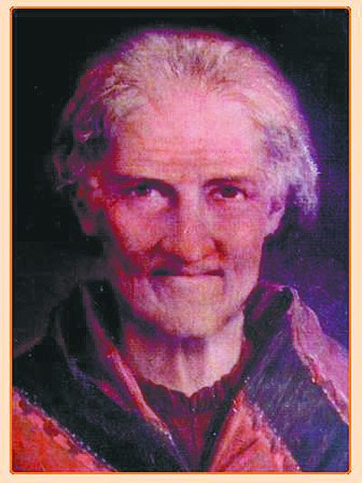
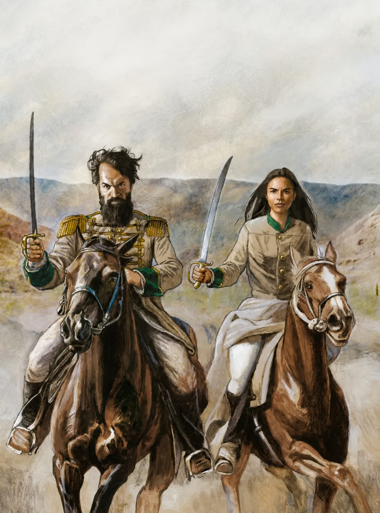

¿Quién fue Macacha Güemes?
María Magdalena Dámasa Güemes de Tejada, conocida popularmente como Macacha Güemes, fue una mujer salteña que tuvo una importante participación durante el proceso de independencia de las Provincias Unidas del Río de la Plata.
Nació el 11 de diciembre de 1787 en la ciudad de Salta. Fue hija de Gabriel Güemes Montero y de María Magdalena Goyechea y de la Corte. Su familia pertenecía a un sector importante de la sociedad salteña.
Macacha fue hermana de Martín Miguel de Güemes, uno de los principales líderes de la defensa del norte argentino durante las guerras de independencia.
Durante su vida participó en diferentes actividades relacionadas con la causa revolucionaria. Su colaboración no se limitó a una sola tarea, sino que estuvo relacionada con la organización, la comunicación, la ayuda a los soldados y también con cuestiones políticas.

Su infancia y su familia
Macacha nació en una familia numerosa de Salta. Su padre, Gabriel Güemes Montero, era funcionario de la Real Hacienda, mientras que su madre pertenecía a una familia tradicional de la región.
Desde pequeña vivió en una sociedad marcada por las diferencias sociales y por la importancia que tenían las familias relacionadas con las instituciones coloniales.
Su hermano Martín Miguel de Güemes nació en 1785, dos años antes que ella. Ambos crecieron en Salta y posteriormente tuvieron una relación muy cercana durante los años de la Revolución y las guerras de independencia.
La familia Güemes tuvo una participación importante en la vida política y social de Salta. Esto permitió que Macacha conociera diferentes personas y situaciones que posteriormente serían importantes durante el proceso revolucionario.
Su matrimonio
En 1803, cuando tenía 15 años, Macacha se casó con Román Tejada. El matrimonio tuvo una hija llamada Eulogia.
A pesar de formar una familia, Macacha continuó teniendo participación en los acontecimientos políticos y sociales que se desarrollaron en Salta durante los años posteriores.
La vida de Macacha demuestra que las mujeres de aquella época podían participar de diferentes maneras en los acontecimientos históricos, incluso cuando la sociedad no les otorgaba los mismos espacios políticos que a los hombres.
Macacha durante la Revolución de Mayo
En 1810 se produjo la Revolución de Mayo en Buenos Aires. Este acontecimiento provocó grandes cambios políticos en el territorio del antiguo Virreinato del Río de la Plata.
La noticia de la revolución llegó a las diferentes ciudades y generó nuevas discusiones sobre el futuro político de los territorios.
Macacha apoyó la causa revolucionaria y comenzó a colaborar con las actividades relacionadas con su hermano Martín Miguel de Güemes y con los grupos que defendían la revolución.
Su colaboración con los patriotas
Una de las formas en las que Macacha colaboró fue mediante la organización y preparación de elementos necesarios para quienes participaban en las campañas militares.
Se ocupó de tareas relacionadas con la confección de ropa y otros elementos para los soldados. Estas actividades eran importantes porque los ejércitos necesitaban recursos para continuar con sus campañas.
También colaboró con información y comunicación. En un período en el que no existían los medios de comunicación actuales, transmitir información rápidamente podía ser fundamental.
Por sus relaciones sociales y por su cercanía con diferentes personas, Macacha pudo intervenir en situaciones que tenían importancia política.
Macacha y Martín Miguel de Güemes
Martín Miguel de Güemes fue una de las personas más importantes de la vida de Macacha. Los dos compartieron el compromiso con la causa revolucionaria.
Güemes se convirtió en el principal líder de la defensa de Salta y del norte argentino. Organizó las llamadas milicias gauchas, que tuvieron un papel fundamental para frenar el avance de las fuerzas realistas.
Macacha fue una persona de confianza para su hermano y participó en diferentes situaciones relacionadas con la política y la organización.
La colaboración entre ambos demuestra que la defensa del territorio no dependía solamente de quienes luchaban en el campo de batalla. También eran necesarias personas que organizaran recursos, transmitieran información y ayudaran en las negociaciones.

Los últimos años de Macacha
Después de la etapa más intensa de las guerras de independencia, Macacha continuó viviendo en Salta.
Siguió vinculada a la sociedad salteña y mantuvo su importancia dentro de la vida política y social de la provincia.
Macacha murió el 7 de junio de 1866 en la ciudad de Salta, a los 78 años.
Con el paso del tiempo, su figura comenzó a ser cada vez más reconocida como una de las mujeres que participaron en el proceso de independencia argentina.
¿Por qué es importante conocer su vida?
Conocer la vida de Macacha Güemes permite comprender que la Independencia Argentina no fue realizada solamente por los grandes lideres militares que aparecen habitualmente en los libros de historia.
Muchas otras personas participaron desde diferentes lugares. Las mujeres colaboraron en tareas de organización, comunicación, espionaje, asistencia y politica.
Macacha es un ejemplo de esta participación y permite ampliar nuestra mirada sobre la historia argentina.
Volver al Inicio